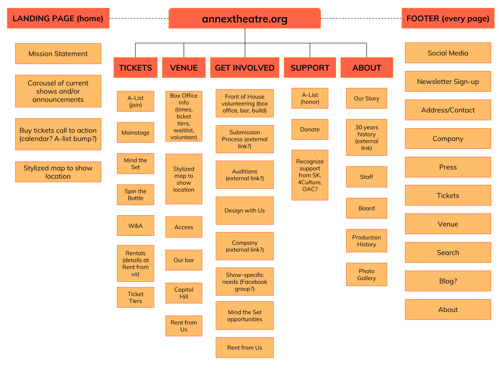

WEB 200: Theory of Web Design
Staging Area
Student: Catherine Blake Smith
Instructor: Jose Mayorquin
Client: Annex Theatre
Spring 2018 at Seattle Central College
Staging Area
Student: Catherine Blake Smith
Instructor: Jose Mayorquin
Client: Annex Theatre
Spring 2018 at Seattle Central College
I am redesigning the website for Annex Theatre, located at annextheatre.org. Annex's current website could benefit from an upgrade. Often, users call our website “bad” but they can't put their finger on why. Our website contains a lot of information (current and upcoming shows, a full archive of productions, information about our company and how to rent and propose shows to us) so it serves several purposes for our current/potential audience and donors, as well as members of the theatre community. I want to assess what currently exists, identify and articulate the primary uses for the site, and look at how we can better direct traffic for users. My hope is to respond to the complaints without being reactionary. We do not have a budget, since we are all volunteers. Although I'm Artistic Director, I will be looking for feedback from the Managing Director, Artistic Associates, and Board President. We are a consensus-driven organization, so we will (ideally) all have final approval once we reach agreement.
Our target audience are theatregoers, heavy internet users who use desktop and mobile equally, and access through an infinite number of channels (social media, event calendars, newsletters, word of mouth). They are young professionals, artists and friends of artists, and critics. They want to be able to purchase tickets, find where Annex is located, get in touch with us, donate to Annex, learn about the shows, find out how much it costs to rent our space, submit a play to our season, or read about Annex's history. They care about new plays and are either interested in seeing one of our plays or want to donate to our theatre because they had a good experience. I am unsure of our traffic since I do not have access to the current Wordpress dashboard. I only know this information as a user myself and from talking to people in the community.
The most common reaction I hear from our target audience and users is how frustrated they are with our website. It's not updated quickly enough with information (other internal hoops contribute to this issue as well that we are working to resolve within), they cannot locate the donate button easily, and I don't believe the style or format or theme fits the look and feel we convey as a company. Our website does not convey a positive user experience. It is confusing to find information because it is not intuitively laid out. I want users to feel welcome and informed when they come to our site. Currently, it can feel like a wall that is too difficult to scale. A new website developed from an approach of deep investigation and not just reacting to “it's bad” will help us achieve the goal of making sure audiences and artists feel welcome and informed.
We have never conducted usability tests but I am aware through word of mouth that people have used it to locate project archives, purchase tickets, and learn about our company. I want to make sure that information is intuitively located. We have also produced a ton of shows, and we do not have a lot of photographic evidence to convey that information. When asking for people to consider proposing plays to our theatre or renting our space, we do not have a lot of photographs, which is one of the easiest and most straightforward ways to convey that information efficiently.
Currently, I think it is not intuitive that you have to scroll to see all of our current shows, that the elements people come to our site most frequently for (that I know of through word of mouth) are not easy to access, and I personally find flyout menus difficult to navigate. Since the website is chock full of information, nested menus are a necessity. We don't have to keep the current colors, only the logo, which is black (black goes with everything). I am fan of these three websites for different elements: acttheatre.org has all of the shows one page, making a good use of carousels. barbican.org.uk has a lovely navigation bar with a big safe background and all of the options laid out. silotheatre.co.nz has a lot of fun interactive elements and whitespace contributing to a consistent look and feel overall.
We will use the existing content and creating better entry points for new content. It's a complete overhaul of the current structure and placement of content, not the content itself. The logo and some naming conventions should remain, but every element should be examined closely and considered. I don't currently have a sitemap or outline setup yet, since that's part of the next assignment, Information Architecture.
Our target platforms and browsers are any and all. The only technologies used must be simple to manage and update since there is not a consistent person who maintains the site over the years. Our eCommerce is set up through third-parties. A search function would be nice to add, but if navigation is laid out clearly it may not be necessary.
By crafting clear navigation and establishing proper hierarchy of the current content, we will be able to convey the message that we want audiences and artists to feel welcome and informed. We'll know if the site is achieving what we want from positive responses from audiences and artists. Stages of development for this project:
There are two other Annex Theatres in the US: LA and Baltimore. LA is called the Underground Annex Theater (spelled differently) and does not seem to have a dedicated website. Baltimore's URL is baltimoreannextheater.org but we often get confused with them on Twitter and Instagram. There is also a “The Annex Theatre” in Toronto, but they are part of a college. Locally, we are Seattle's longest-running fringe theatre and we produce all new work. We are all-volunteer. There aren't any other theatre companies that fit that description.
What our site does well now: integrates well with Ovation for purchasing tickets and the sidebar is effective for learning basic contact info quickly and easily.
People discover our website now by Google search, social media, and that it is posted in newsletter emails and marketing materials. We do not have any short-term or existing marketing strategies to increase outreach of a redesigned website. We have a volunteer webmaster but the task list is not clearly managed.
Once the new website is launched, Annex Theatre in Seattle will have a professional and easy-to-navigate site that is welcoming and informative.
There are several questions to ask when first looking at at the annextheatre.org website. Users have vastly different objectives that don't always overlap. There are several sections of the website that all need to be welcoming and easy to identify. Some buttons will link to external sites created through Google so they can be updated more frequently by staff members as needed.
The questions from above and more are answered in this new structure for the site. Headings ave been renamed and each page will include each subsection in an easy-to-spot section.
